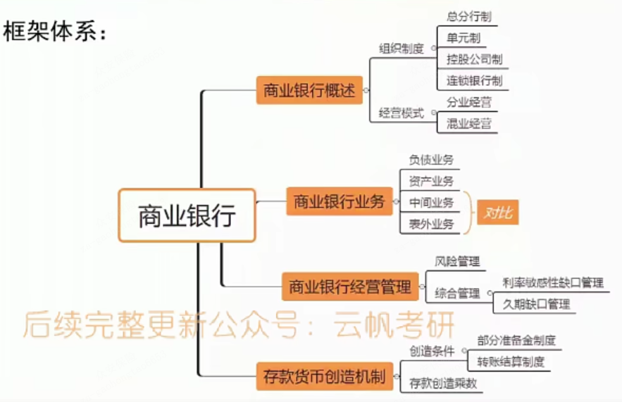

[toc]
第一节 商业银行概述
一、商业银行的产生
1694年，英国成立了第一家股份制商业银行(英格兰银行)一标志着现代银行制度的建立。我国的商业银行是指依照《中华人民共和国商业银行法》和《中华人民共和国公司法》设立的吸收公众存款、发放贷款、办理结算等业务的企业法人。
二、商业银行制度
- 总分行制：我国
- 单元制：不设分支机构，美国
- 持股公司制：美国现状
- 连锁银行制：法律上独立
三、分业经营与混业经营
1. 分业经营
1 | // 分业经营是指对金融中介机构业务范围进行某种程度的“分业”管制。 |
2. 混业经营
1 | // 混业经营是金融中介机构实行综合经营的金融制度。 |
第二节 商业银行的负债业务
负债业务是指形成商业银行资金来源的业务。
一、资本金业务
银行的资本与一般工商企业有所区别，不仅包括实收股本等股权资本，还可以包括一些满足条件的债务资本。
设立全国性商业银行的注册资本最低限额为十亿元人民币。设立城市商业银行的注册资本最低限额为一亿元人民币，设立农村商业银行的注册资本最低限额为五千万元人民币。注册资本应当是实缴资本。
二、存款业务（被动负债）
存款业务是银行接受客户存入的货币款项，存款人可随时或按约定时间支取款项的一种信用业务。这是银行的传统业务，在负债业务中占有最主要的地位。
- 活期存款M1
- 定期存款M2
- 储蓄存款M2
1 | 补充： |
三、借款业务（主动负债）
- 从中央银行借款
- 银行同业拆借
- 发行金融债券
- 回购协议借款
第三节 商业银行的资产业务
1 | > 商业银行的资产业务是指将自己通过负债业务所聚集的货币资金加以运用的业务，是取得收入的主要途径。 |
一、现金业务
现金资产包括库存现金、存放在中央银行的存款准备金、同业存款和托收过程中的资金。
- 准备金：库存现金、存款准备金❤
- 应收现金：在途资金
- 存放同业
1 | 若活期存款法定准备金率10％，求： |
二、贷款业务
贷款是商业银行最重要的资金运用业务。贷款比重的提高会增加银行预期盈利，但同时也增加了银行的风险。所以，盈利与风险是贷款业务中考虑的核心。其中，贴现实质上是一种贷款性的资产业务。思考：贴现和贷款有啥区别？

三、证券投资
1 | 证券投资是指商业银行以其资金持有各种有价证券的业务活动。 |
第四节 商业银行的中间业务和表外业务
一、中间业务的概念及类型
- 中间业务的概念
中间业务也称为无风险业务，是指银行不需要运用自己的资金而代理客户承办支付和其他委托事项，并据以收取手续费的业务。最常见的是传统的汇兑、信用证、代收、代客买卖等业务。中间业务的基本特色是业务活动不需要动用资金，与客户之间不发生借贷性的信用关系。
- 中间业务的类型
- 汇兑业务
- 代收业务
- 代客买卖业务
- 承兑业务
- 信托业务
- 代理融通业务
- 银行卡业务
1 | 胡庆康《现代货币银行学教程》中，中间业务有： |
二、表外业务的概念及类型
- 表外业务的概念
表外业务是指不直接列入资产负债表内，但同表内的资产业务或负债业务关系密切的业务。广义的表外业务既包括传统的中间业务，又包括金融创新中产生的一些有风险的业务，如互换、期权、期货、远期利率协议、票据发行便利、贷款承诺、备用信用证等业务。通常提及的表外业务专指后一类，属狭义表外业务。
- 表外业务的类型
- 担保业务
- 票据发行便利(资产证券化CDS)
- 金融衍生工具交易
- 贷款出售
简述表外业务和中间业务。[南开大学2013金融硕士]
第五节 商业银行的风险特征
一、商业银行风险
1. 商业银行风险的含义
商业银行风险是指商业银行在经营活动中，因不确定因素使商业银行遭受损失或获取额外收益的机会和可能性。商业银行风险主要受客观经济环境、经营决策和管理水平决定。
2. 银行风险的类型
- 流动性风险
- 利率风险
- 信用风险
- 投资风险
- 汇率风险
- 政策风险
- 操作风险
二、利率敏感性缺口管理
利率敏感性缺口：利率敏感性资产（如浮动利率贷款）和利率敏感性负债（如发行的浮动利率债券）的差额。
正缺口：利率敏感性资产大于利率敏感性负债
当预测市场利率上升时，银行应持有正缺口。
负缺囗：利率敏感性资产小于利率敏感性负债
当预测市场利率下降时，银行应持有负缺口。
1 | ++ - + |